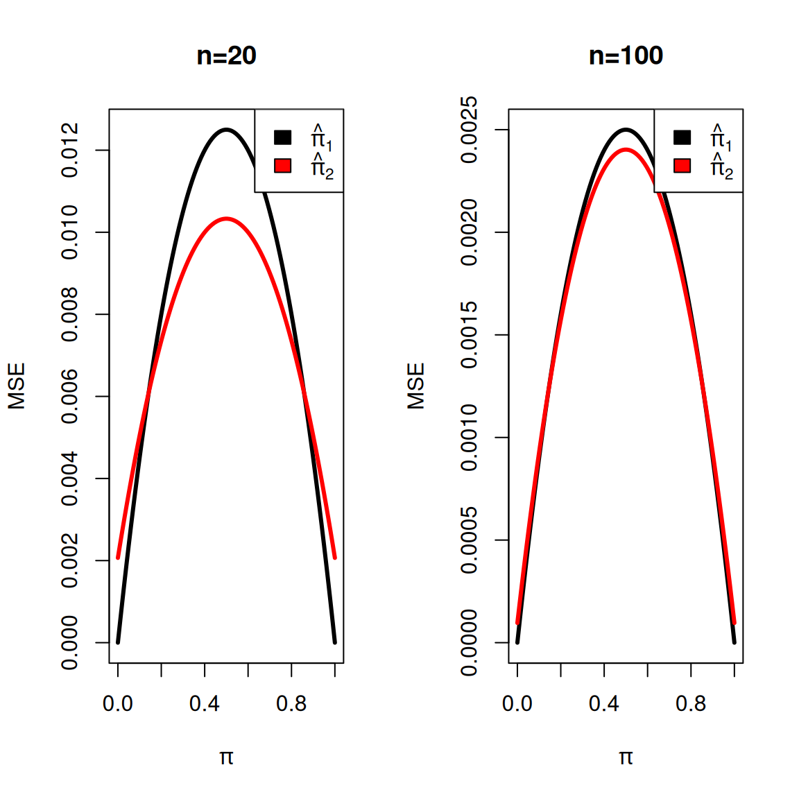
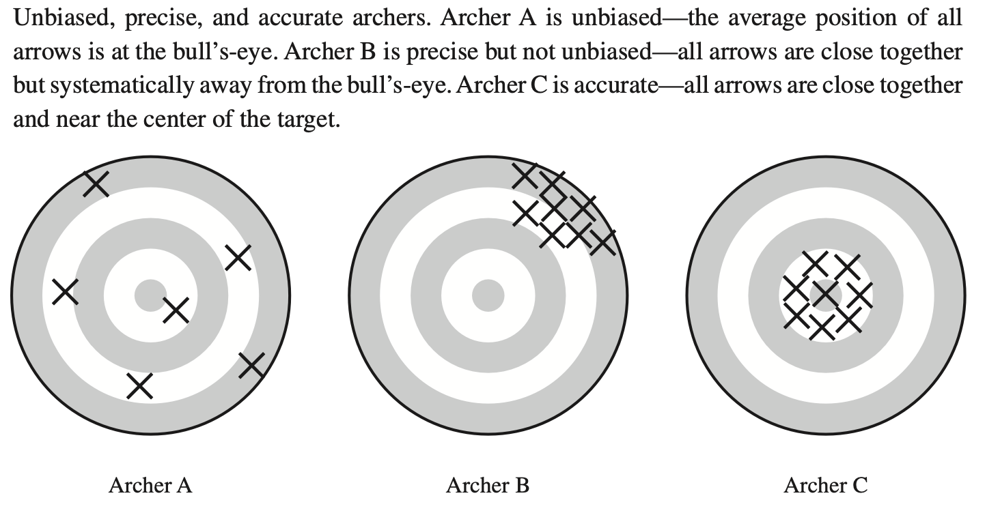

Efficiency and Mean Squared Error
Questions/Goals for this Module
- What properties of the sampling distribution makes a good estimator?
- Understand the role of bias and variance in evaluating an estimator
We’ve discussed already some important sampling distribution properties of estimators, such as bias and variance of an estimator. We’re going to be turning now to consider in detail ideas about how we can evaluate different possible estimators, to consider how we can compare estimators.
Comparing the Variance of Estimators
Example: mean versus median
Suppose we know that \(X_1, \ldots, X_n\) are i.i.d. from a Normal distribution \(N(\theta, \sigma^2)\). Our goal is to estimate \(\theta\) using one of the two estimators: either the sample mean or the sample median. Which one should we use? Let’s look at their expected values and variances.
Sample mean:
\[ \begin{aligned} \hat{\mu} &= \bar{X}_n, \\ \mathbb{E}(\hat{\mu}) &= \mu, \\ \text{Var}(\hat{\mu}) &= \frac{\sigma^2}{n} \end{aligned} \]
Sample median: The sample median, \[\tilde{\mu} &= median(X_1,\ldots,X_n)\] is asymptotically normal, with a variance that depends on the distribution of the \(X_i\). For a normal, we have \[ \begin{aligned} \mathbb{E}(\tilde{\mu}) &= \mu, \\ \text{Var}(\tilde{\mu}) &\approx \frac{\pi\sigma^2}{2n}\;\text{ for large } n. \end{aligned} \] Thus, they are both unbiased estimates, but if we compare their variances we see \[ \frac{\pi}{2} > 1 \Rightarrow \text{var}(\tilde{\mu}) > \text{var}(\hat{\mu}) \] We see that though they are both unbiased, the sample median has a larger variance than the sample mean. This could lead us to prefer the mean as the estimator of the true mean. Having low variance is important since it increases the accuracy of the estimator.
Relative Efficiency of Two Estimators
To quantify this idea of “better” estimators, we will define the Relative Efficiency of two estimators: Suppose we want to compare a pair of unbiased estimators of a parameter \(\theta\), denoted by \(\hat{\theta}\), \(\tilde{\theta}\).
Definition 1 The efficiency of unbiased estimators \(\tilde{\theta}\) relative to \(\hat{\theta}\) is given by:
\[ \text{eff}(\hat{\theta}_n,\tilde{\theta}_n) = \frac{\text{var}(\hat{\theta}_n)}{\text{var}(\tilde{\theta}_n)} \]
This quantity is called Relative Efficiency.
What does it mean if \(\text{eff}( \hat{\theta}_n,\tilde{\theta}_n) < 1\)? In that case, we have that \(var(\tilde{\theta}_n) > \text{var}(\hat{\theta}_n) \Rightarrow \hat{\theta}_n\) is a preferred estimator in terms of variance.
Consider our comparison of the median and the mean. We have \[\text{eff}( \hat{\mu}_n,\tilde{\mu}_n)=\frac{\sigma^2/n}{\pi\sigma^2/2n}=2/\pi\approx 0.63\]
Role of Assumptions
Note that our comparison of the mean and median depends on our knowing the data is normal. The variance of the mean is always the same for any distributions if the two distributions have the same variance. However, the variance of the median will depend more closely on the specific distribution of the data.
For example, consider the Laplace distribution with density \[f(x)=\frac{1}{2b}\exp{-\frac{|x-\mu|}{b}}.\] The Laplace distribution is symmetric, like the normal, but is very heavy tailed compared to the normal.
For data that are i.i.d. Laplacian with mean \(\mu\) and variance \(\sigma^2=2b^2\), we have that both \(\hat{\mu}\) and \(\tilde{\mu}\) are still unbiased estimates of the mean, but the asymptotic variance of \(\tilde{\mu}\) is \[var(\tilde{\mu})\approx \frac{\sigma^2}{2n},\] i.e. about half that of the mean, which is still \[var(\hat{\mu})= \frac{\sigma^2}{n},\] making the median the estimator with lower variance. Specifically, we have \[\text{eff}( \hat{\mu}_n,\tilde{\mu}_n)=\frac{\sigma^2/n}{\sigma^2/2n}=2>1\] so \(\tilde{\mu}\) is now more efficient than \(\hat\mu\). This will be generally true for heavy tailed distributions. Ultimately, when there is high probability of the large deviations from the mean, the median will be less variable than the mean.
This discrepancy in which estimator is more efficient is not unusual. Evaluations of the efficiency of estimators will frequently be sensitive to the assumptions of the distribution of the data.
This doesn’t mean efficiency is useless. Using our efficiency analysis of the mean and the mean, we can arrive at an idea of under what circumstances the mean is preferred over the median. Depending on what type of data we have, we can use this information to inform us as to which is the better estimate. In other words, knowing which is the most efficient estimator, under a certain distributional assumption, allows us to then consider which assumptions best match our data.
Mean Square Error
We’ve already discussed how we would like an estimator to be both unbiased and low variance. Recall our archery figure,

In the illustration above, it seems like the right answer is to have unbiasedness and low variance. And relative efficiency allows us to evaluate different estimators based on their variance.
But what if your most efficient unbiased estimator looks more like the bullseye on the left than the right? Maybe we would prefer something with a little bias if we got better variance. (And, while we can have zero bias, we will never have zero variance – why?). In fact it is well known that sometimes accepting a small amount of bias will result in much smaller variance than any unbiased estimator.
So how should we compare estimators if they are potentially biased? In this case the variance estimates \[var(\hat\theta)= E(\hat\theta-E(\hat\theta))^2\] which is not what we are really interested in if \(E(\hat\theta)\neq \theta\).
We would prefer to estimate the difference between the expected value of the estimator and the true value of the population parameter, \[ E(\hat\theta-\theta)^2\]
Definition 2 (Mean Squared Error) The mean squared error is the expected value of the squared difference between the estimator \(\hat{\theta}\) and the true value of the population parameter \(\theta\). We denote it by \(MSE\): \[ MSE = E\left[\left(\hat{\theta} - \theta \right)^2\right] \]
If \(\hat\theta\) is unbiased, then clearly \(var(\hat\theta)=MSE(\hat\theta),\) but for biased estimators this isn’t the case.
We can show that
\[ \text{MSE}(\tilde{\theta}_n) = \left(\text{Bias}(\tilde{\theta}_n)\right)^2 + \text{Var}(\tilde{\theta}_n) \] So the MSE can actually be smaller for the biased estimator if the resulting variance is small. This is often called a bias-variance tradeoff and is particularly common in more complex problems, for example in prediction.
Exercise/Question
Show that \(MSE = \text{Variance} + \text{Bias}^2\).
Check your work
\[\begin{align*} \mathrm{MSE}(\hat\theta) &= E\big[(\hat\theta - \theta)^2\big] \\ &= E\big(\hat\theta ^2\big) -2 \theta E\big(\hat\theta\big) + \theta^2\\ &= \mathrm{Var}\big(\hat\theta\big) + \big[E\big(\hat\theta\big)\big]^2 -2 \theta E\big(\hat\theta\big) + \theta^2\\ &= \mathrm{Var}\big(\hat\theta\big) + \big[E\big(\hat\theta\big) - \theta\big]^2\\ &= \mathrm{Var}(\hat\theta) + \big[\mathrm{Bias}(\hat\theta)\big]^2. \end{align*}\]Example of MSE of a biased estimator
This is a common example used to look at biased estimators (Chihara and Hesterberg (2018)). Let \(X_1,\ldots,X_n\) be Bernoulli(\(\pi\)).
Estimator 1 The sample proportion \(\hat{\pi}_1 = \bar{X}=\sum X_i/n\) is an unbiased estimator of \(\pi\), and we have that \[MSE\left(\hat{\pi}_1\right) = var(\hat{\pi}_1)= \dfrac{\pi(1-\pi)}{n}.\]
Estimator 2 Consider an alternative estimator of \(\pi\), denoted by \(\hat{\pi}_2\), where \[\hat{\pi}_2 = \dfrac{\sum X_i+1}{n+2},\] that is, we add one artificial success and one artificial failure to the data. This is not an uncommon estimator to use, in particular if we are estimating something with a small probability of success. For \(\hat{\pi}_1\), if we don’t observe any \(X_i=1\) out of \(n=50\), then we estimate \(\hat{\pi}_1=0\), i.e. it’s impossible to get a success; but \(\hat{\pi}_2=0.03\), a small boost to our prediction of the chance that you might get a success.
Then we have for \(\hat\pi_2\) \[ \begin{gathered} bias(\hat\pi_2)=\frac{1-2\pi}{n+2} \neq 0\\ var(\hat\pi_2)=\frac{n}{(n+2)^2}\pi(1-\pi)\\ MSE(\hat\pi_2)=\frac{1+(n-4)\pi-(n-4)\pi^2}{(n+2)^2} \end{gathered}\]
Compare what the MSE looks like for different values of the true \(\pi\),
We see that if \(\pi\) on the boundary, that we have better MSE with \(\hat\pi_2\), even though it’s slightly biased, while for \(\pi\) in the interior, our standard MLE will perform better. The improvement is more striking for smaller sample sizes; for larger \(n\) the difference between the two is much smaller, though still remains. This makes sense, because for large \(n\), adding a single count or two to \(\sum X_i\) or \(n\) is not going to change them much, so \(|\hat\pi_2-\hat\pi_1|\rightarrow 0\).
Exercise/Question
Confirm the calculations given above for the bias, variance, and MSE of \(\hat\pi_2\)
References
Agresti, Alan, and Maria Kateri. 2021. Foundations of Statistics for Data Scientists. Chapman; Hall/CRC.
Chihara, Laura M., and Tim C. Hesterberg. 2018. Mathematical Statistics with Resampling and r. John Wiley & Sons, Hoboken, NJ.
Rice, John A. 2006. Mathematical Statistics and Data Analysis. 3rd ed. Duxbury Press.